from pandas import (read_csv,
DataFrame,
concat,
get_dummies,
)
0.1 Context
Un equipo de Recursos Humanos te acaba de proporcionar el archivo que has descargado. En este se indican algunas características que ellos creen que influyen en el salario que buscan algunas personas que se postulan en empresas de tecnología.
Este equipo pide de tu apoyo para diseñar un modelo que pueda predecir cuánto pedirá cada postulante con base en las siguientes características:
Experiencia: Años de experiencia en el área.Posición: Posición que busca; existen tres opciones:AnalistaCoordinadorGerente
Hijos: Número de hijos que tiene.Casado: ¿El postulante está casado?0: No1: Sí
Educación: ¿Cuál es el grado máximo de estudios concluido? Existen tres opciones:BachilleratoLicenciaturaPosgrado
Salario: Cantidad en pesos mexicanos que pide. Esta variable es la que se pretende predecir en este ejercicio.
1 Regresor model
1.1 Import Libraries
from numpy import (bincount,
sqrt,
logspace,
argmax,
arange,
)import matplotlib.pyplot as pltfrom seaborn import (heatmap,
scatterplot,
kdeplot,
displot,
set_style,
lineplot,
boxplot,
pairplot,
catplot,
)from sklearn.linear_model import (LinearRegression,
Lasso,
LassoCV,
RidgeCV,
Ridge,
LogisticRegression,
)
from sklearn.metrics import (accuracy_score,
confusion_matrix,
ConfusionMatrixDisplay,
mean_squared_error,
r2_score,
roc_auc_score,
roc_curve,
classification_report,
)
from sklearn.preprocessing import (StandardScaler,
LabelEncoder,
RobustScaler,
MinMaxScaler,
)
from sklearn.model_selection import train_test_split
from sklearn.compose import ColumnTransformer
from sklearn.pipeline import Pipeline
from sklearn.preprocessing import LabelEncoder
from sklearn.preprocessing import RobustScalerimport joblibfrom google.colab import drive
drive.mount('/content/drive')Drive already mounted at /content/drive; to attempt to forcibly remount, call drive.mount("/content/drive", force_remount=True).#Configuración
import warnings
warnings.filterwarnings('ignore')1.2 Load data
# Definimos nuestra variable con el Dataframe a trabajar, con el nombre df_1
df = read_csv("/content/drive/MyDrive/Colab Notebooks/proyectos/rrhh.csv")
df.head()| Experiencia | Posicion | Hijos | Casado | Educacion | Salario | |
|---|---|---|---|---|---|---|
| 0 | 0.5 | Analista | 4 | 1 | Bachillerato | 13540 |
| 1 | 5.6 | Analista | 2 | 0 | Licenciatura | 31240 |
| 2 | 11.7 | Analista | 1 | 0 | Licenciatura | 63880 |
| 3 | 5.2 | Analista | 2 | 1 | Licenciatura | 29960 |
| 4 | 7.2 | Coordinador | 2 | 1 | Licenciatura | 34710 |
Ya con nuestro dataset en el drive, podremos cargarlo y definirlo como df, y observamos como se ve.
1.3 EDA
print(df.info())<class 'pandas.core.frame.DataFrame'>
RangeIndex: 1000 entries, 0 to 999
Data columns (total 6 columns):
# Column Non-Null Count Dtype
--- ------ -------------- -----
0 Experiencia 1000 non-null float64
1 Posicion 1000 non-null object
2 Hijos 1000 non-null int64
3 Casado 1000 non-null int64
4 Educacion 1000 non-null object
5 Salario 1000 non-null int64
dtypes: float64(1), int64(3), object(2)
memory usage: 47.0+ KB
NoneAcá podemos observar la información del dataset, desde el total de muestras hasta el tipo de dato.
df.describe().T| count | mean | std | min | 25% | 50% | 75% | max | |
|---|---|---|---|---|---|---|---|---|
| Experiencia | 1000.0 | 6.4162 | 2.577612 | 0.1 | 4.6 | 6.4 | 8.1 | 15.2 |
| Hijos | 1000.0 | 1.4530 | 1.208823 | 0.0 | 0.0 | 1.0 | 2.0 | 4.0 |
| Casado | 1000.0 | 0.5950 | 0.491138 | 0.0 | 0.0 | 1.0 | 1.0 | 1.0 |
| Salario | 1000.0 | 30787.0600 | 11520.200049 | 5630.0 | 22557.5 | 29470.0 | 37922.5 | 83470.0 |
Acá observamos las estadisticas descriptivas del dataset, el feature de Salario nos indica su dispersión de manera significativa, reflejando una variabilidad considerable entre los salarios de los empleados. Se puede apreciar entre la diferencia de salarios entre el cuartil 25% y el 75%.
df.isna().sum()Experiencia 0
Posicion 0
Hijos 0
Casado 0
Educacion 0
Salario 0
dtype: int64El dataset cuenta con toda su completitud
df.duplicated().sum()0No contiene valores duplicados.
1.4 Univariate analysis
df.columnsIndex(['Experiencia', 'Posicion', 'Hijos', 'Casado', 'Educacion', 'Salario'], dtype='object')1.4.1 Experiencia column
df['Experiencia'].unique()array([ 0.5, 5.6, 11.7, 5.2, 7.2, 1.3, 8.1, 6.2, 9.8, 10.5, 6.4,
3.7, 8. , 9. , 1.7, 12.2, 7. , 5.9, 1.6, 9.7, 5. , 6.6,
9.6, 7.8, 11.9, 6.3, 4.5, 4.9, 8.4, 8.8, 9.1, 7.5, 5.8,
9.3, 5.5, 3.9, 6.9, 2.2, 4.2, 9.9, 5.4, 10.1, 0.9, 9.2,
8.2, 8.5, 7.4, 6.1, 7.7, 2.8, 3.2, 5.3, 0.8, 11.5, 3. ,
7.1, 2.1, 7.6, 8.6, 6.5, 10.9, 4.8, 4.3, 13. , 10.2, 6.8,
5.7, 4.4, 7.9, 10.6, 8.7, 3.1, 8.3, 4.6, 6. , 10.8, 2.4,
15.2, 2.6, 1.4, 4.1, 3.3, 2. , 3.5, 0.6, 6.7, 4.7, 1. ,
7.3, 8.9, 9.5, 1.2, 12.9, 5.1, 3.8, 10.4, 3.6, 13.5, 10.7,
9.4, 11.3, 11.1, 2.5, 0.7, 11.8, 2.7, 3.4, 1.8, 10. , 4. ,
12.5, 11.4, 0.1, 14.4, 14.3, 11.6, 1.9, 12.4, 12.3, 10.3, 2.9,
14.8, 1.1, 11.2, 14.1, 13.7, 12.1])plt.figure(figsize=(8,6))
plt.hist(df['Experiencia'], bins=20, edgecolor='black')
plt.xlabel('Experiencia')
plt.ylabel('Frecuencia')
plt.title('Grafica de experiencia')
plt.show()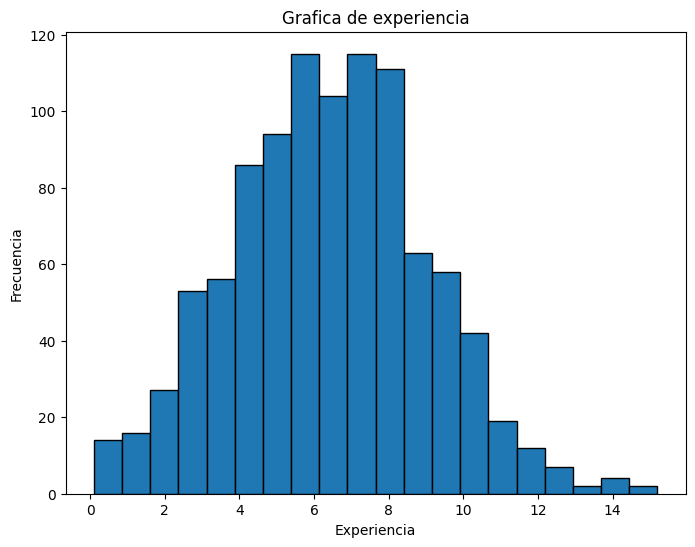
Cuando una gráfica tiene forma de campana, como esta, se le llama distribución normal o distribución gaussiana, entre los 4 - 8.5 se encuentra la mayor concentración de la experiencia de los usuarios
1.4.2 Posición column
df['Posicion'].unique()array(['Analista', 'Coordinador', 'Gerente'], dtype=object)plt.figure(figsize=(6,6))
df['Posicion'].value_counts().plot(kind='pie', autopct='%1.1f%%', startangle=140)
plt.title('Posiciones')
plt.ylabel('')
plt.show()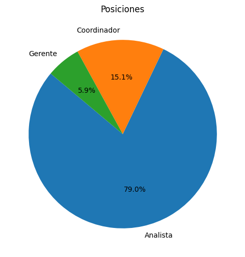
plt.figure(figsize=(6,4))
df['Posicion'].value_counts().plot(kind='bar', color=['blue', 'orange', 'green'])
plt.xlabel('')
plt.ylabel('Cantidad')
plt.title('Posiciones')
plt.xticks(rotation=0)
plt.show()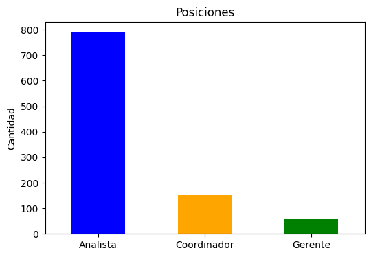
Con estas graficas podemos ver los cargos y lo que representa en su totalidad, en su mayoria son analistas por otra parte la minoria de parte de los gerentes
1.4.3 Hijos column
df['Hijos'].nunique()5plt.figure(figsize=(6,6))
df['Hijos'].value_counts().plot(kind='pie', autopct='%1.1f%%', startangle=140)
plt.title('Hijos')
plt.ylabel('')
plt.show()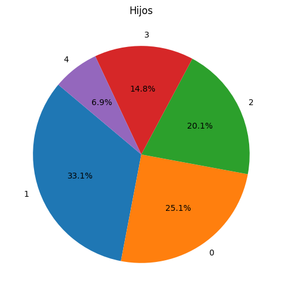
Con casi el 60% de los usuarios cuentan con 0 o 1 hijo, luego son cada vez menos las personas que cuentan con mayor cantidad de hijos.
1.4.4 Casado column
df['Casado'].nunique()2plt.figure(figsize=(6,6))
df['Casado'].value_counts().plot(kind='pie', autopct='%1.1f%%', startangle=140)
plt.title('Casado')
plt.ylabel('')
plt.show()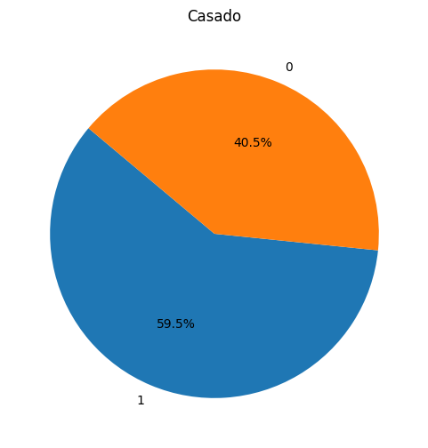
Casi se aprecia un equilibrio entre las personas casadas o los que no lo estan, siendo las personas casadas la mayoria con casi un 60%
1.4.5 Educacion column
df['Educacion'].nunique()3plt.figure(figsize=(6,6))
df['Educacion'].value_counts().plot(kind='pie', autopct='%1.1f%%', startangle=140)
plt.title('Educación')
plt.ylabel('')
plt.show()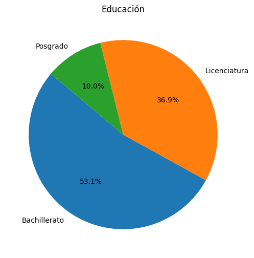
En su mayoria solo cuentan con la educación de bachillerato, tiene relación com aquellos usuarios que cuentan con el cargo mas bajo de analista, donde tambien un pequeño porcentaje de licenciados son analistas, ya que del 10% de los usuarios con posgrado* solo el 6% son gerentes
1.4.6 Salario column
df['Salario'].describe()count 1000.000000
mean 30787.060000
std 11520.200049
min 5630.000000
25% 22557.500000
50% 29470.000000
75% 37922.500000
max 83470.000000
Name: Salario, dtype: float64plt.figure(figsize=(8,6))
plt.hist(df['Salario'], bins=20, edgecolor='black')
plt.xlabel('Salario')
plt.ylabel('Frecuencia')
plt.title('Distribución de salarios')
plt.show()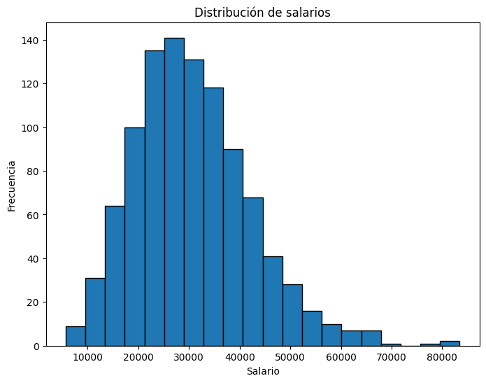
Podemos observar la forma de una campana en esta grafica, una distribución normal; La mayor concentración de personas se encuentran entre 25.000$ - 35.000$
1.5 Label encoder
le = LabelEncoder()
for col in df.columns: # Iteramos entre las columnas object y aplicamos entre ellas
if df[col].dtype == 'object':
le.fit_transform(list(df[col].values))
df[col] = le.transform(df[col].values)Para poder llevar a cabo un analisis bivariado o multivariado los features deben ser numericos, por eso con label encoder, transformaremos aquellos features los cuales cuentan con valores categoricos
1.6 Bivariate Analysis
df.columnsIndex(['Experiencia', 'Posicion', 'Hijos', 'Casado', 'Educacion', 'Salario'], dtype='object')corr = df.corr()
heatmap(corr, annot=True, cmap='coolwarm', vmin=-1, vmax=1)
plt.title('Mapa de Calor de Correlación')
plt.show()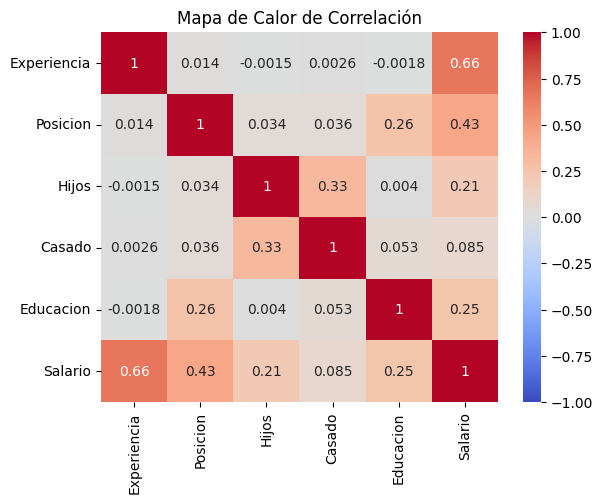
Antes de los análisis multivariados es necesario obtener la relación de las variables entre si, con este mapa de calor de correlación lo podemos obsevar, por ejemplo siendo Salario el features con mayor correlación entre las variables, usaremos esta gráfica para desarrollar los siguientes análisis
exp_sal = df.groupby('Experiencia')['Salario'].sum().sort_values(ascending=False).head(10)
plt.figure(figsize=(8, 6))
exp_sal.plot(kind='bar', color='salmon')
plt.xlabel('Experiencia')
plt.ylabel('Salario')
plt.title('Salario contra experiencia')
plt.xticks(rotation=45, ha='right') # Rotar las etiquetas del eje x para mayor claridad
plt.show()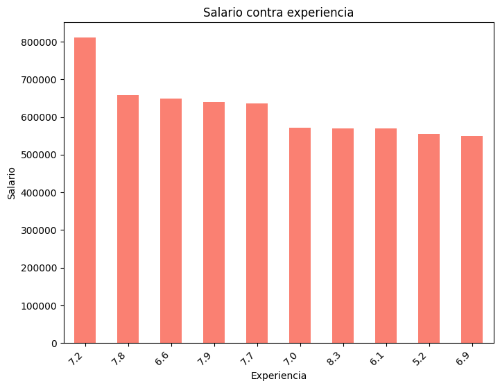
Esta gráfica nos indica como se comporta el Salario con respecto a la Experiencia, vemos una tendencia la cual mientras más experiencia mas salario, podriamos pensar que la mayor de las experiencias tendrian el mayor de los salarios pero en este caso no es así
plt.figure(figsize=(8, 6))
scatterplot(data=df, x='Salario', y='Experiencia', marker='o')
# Añadir títulos y etiquetas
plt.title('Relación entre Salario y experiencia')
plt.xlabel('Salario')
plt.ylabel('Experiencia')
plt.grid(True)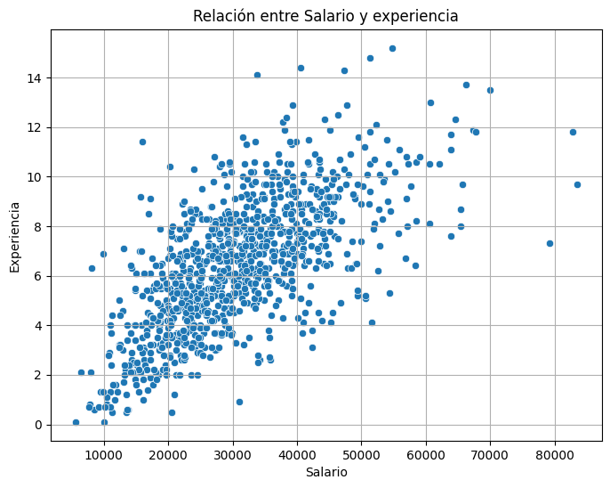
Con esta gráfica de dispersión nos deja ver con mas claridad el comportamiento de ambos features, se logra apreciar que los salarios mas altos no corresponde a los usuarios con mayor experiencia, como se dijo anteriormente
Leyenda de posiciones:- 0:
Analista - 1:
Coordinador - 2:
Gerente
- 0:
Leyenda de educacion- 0:
Bachillerato - 1:
Licenciatura - 2:
Posgrado
- 0:
plt.figure(figsize=(8, 6))
boxplot(x='Posicion', y='Salario', data=df)
plt.title('Distribución de Salario por Posición')
plt.xlabel('Posición')
plt.ylabel('Salario ($)')
plt.show()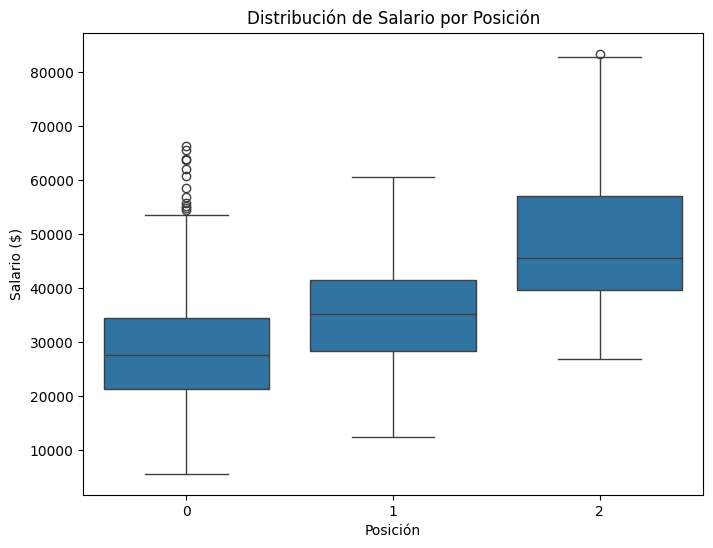
Las gráficas de cajas son muy utiles, podemos ver las Posiciones de los usuarios con respecto al Salario, en la primera posición que seria de analista se observan valores atípicos que representan salarios mas altos de lo “normal”, del resto se comportan de forma “normal”, siendo la posición de gerente con mayor alcance salarial
plt.figure(figsize=(8, 6))
boxplot(x='Educacion', y='Salario', data=df)
plt.title('Distribución de Salario por Nivel de Educación')
plt.xlabel('Educación')
plt.ylabel('Salario ($)')
plt.show()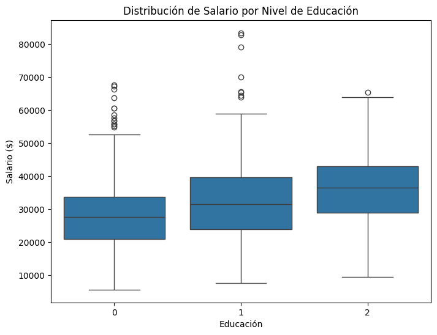
Acá observamos mas cantidad de valores atípicos entre los features de Salario y Educación, por parte de la licenciatura se observan los Salarios mas altos, nos indica que hay usuarios los cuales cuentan con la posición con mayor alcance salarial, sin contar con la mayor Educación
pairplot(df[['Experiencia', 'Posicion', 'Hijos', 'Educacion', 'Salario']])
plt.show()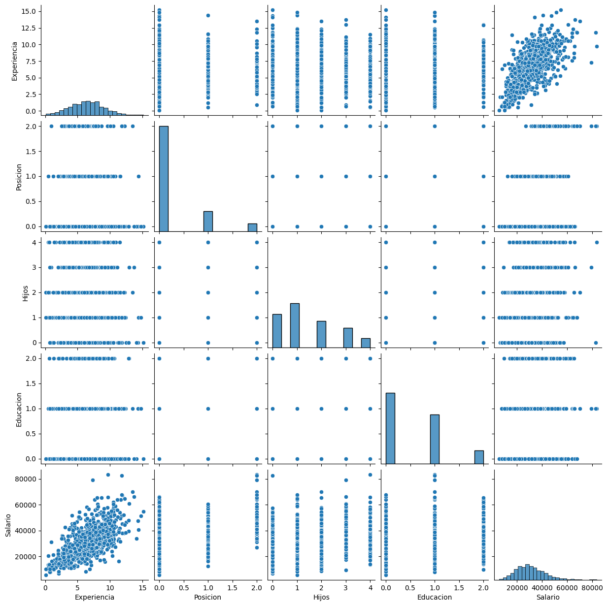
Podemos observar una gráfica mas general la cual involucra todos los features, nos devuelve parte de lo que ya he mostrado y otras mas, por ejemplo, como la cantidad de hijos dependiendo del salario, por ejemplo el usuario con 4 hijos cuenta con el mayor Salario seguido de un usuario sin hijos.
1.7 Train test data
X = df.drop(columns='Salario')
y = df['Salario']
X_train, X_test, y_train, y_test = train_test_split(X, # Ajustes de hiperparametros
y,
test_size=0.15,
random_state=760
)Acá definimos las variables dependientes e independientes, posteriormente definimos los conjuntos de entrenamiento y de prueba para nuestro modelo de predicción
1.8 Data engineering
column = 'Experiencia', 'Hijos' # Definimos los features a transformar
column_transfor = ColumnTransformer(
transformers=[
('escalar', StandardScaler(), column) # Elección del scaler
],
remainder='passthrough'
)
# Crear el pipeline con el transformer
pipeline = Pipeline(steps=[
('preprocesamiento', column_transfor)
])
# Aplicar el pipeline al conjunto de entrenamiento y prueba
X_train = pipeline.fit_transform(X_train)
X_test = pipeline.transform(X_test)Antes del entrenamiento es necesario aplicar un pre-procesamiento o ingeneria de datos para el correcto entrenamiento de dicho modelo, aplicaremos un pipeline sencillo, primeramente especificamos los features que procesaremos, luego instanciamos el metodo de escalamiento, y se lo aplicamos a los conjuntos de entrenamiento
1.9 Train model
model_lr = LinearRegression()
model_lr.fit(X_train, y_train)LinearRegression()In a Jupyter environment, please rerun this cell to show the HTML representation or trust the notebook.
On GitHub, the HTML representation is unable to render, please try loading this page with nbviewer.org.
LinearRegression()
Definimos nuestro modelo de predicción, en este caso de Regresión lineal, y entrenamos con los conjuntos de entrenamiento
1.10 Prediction and performance
y_pred = model_lr.predict(X_test)
mse = mean_squared_error(y_test, y_pred)
r2 = r2_score(y_test, y_pred)
print(f'Error Cuadrático Medio (MSE): {mse}')
print(f'Coeficiente de Determinación (R^2): {r2}')Error Cuadrático Medio (MSE): 31026013.02687542
Coeficiente de Determinación (R^2): 0.7865906308771698Definimos una variable de predicción, y le aplicamos un par de metricas de desempeño, el error cuadratico medio y el coeficiente de determinación nos arroja un 78% del r2, un valor cercano a 1 indica una fuerte variabilidad con respecto a la variable dependiente, en pocas palabras se ajusta mejor a los datos, en este caso contamos con un 78% lo que nos indica buen desempeño del modelo.
df_pred = DataFrame({'Real': y_test,
'Predicción': y_pred})
df_pred.head(10)| Real | Predicción | |
|---|---|---|
| 995 | 21820 | 27051.087501 |
| 404 | 54010 | 56677.752709 |
| 651 | 19360 | 16087.078140 |
| 32 | 31140 | 30370.764973 |
| 609 | 35900 | 36380.155317 |
| 567 | 36800 | 31557.904712 |
| 694 | 43500 | 41003.128612 |
| 545 | 65350 | 53607.832321 |
| 878 | 32160 | 27543.525786 |
| 775 | 17770 | 17111.433285 |
Acá creamos un Dataframe para mostrar una comparación de los valores predichos por nuestro modelo contra los valores reales, como podemos ver un pequeño margen de falla.
1.11 Save the model
# Guardar el modelo
joblib.dump(model_lr, 'modelo_regresion_lineal.pkl')['modelo_regresion_lineal.pkl']Ya con nuestro modelo entrenado y probado, podremos guardarlo para luego desplegar
2 Logistic model
En esta parte deberás hacer un modelo de clasificación que pueda predecir si un postulante será contrato o no, de acuerdo con las variables que te han compartido.
2.1 Load Data
df_1 = read_csv("/content/drive/MyDrive/Colab Notebooks/proyectos/rrhh_2.csv")
df_1.head()| Experiencia | Posicion | Hijos | Casado | Educacion | Salario | Contratado | |
|---|---|---|---|---|---|---|---|
| 0 | 0.5 | Analista | 4 | 1 | Bachillerato | 13540 | 1 |
| 1 | 5.6 | Analista | 2 | 0 | Licenciatura | 31240 | 0 |
| 2 | 11.7 | Analista | 1 | 0 | Licenciatura | 63880 | 0 |
| 3 | 5.2 | Analista | 2 | 1 | Licenciatura | 29960 | 1 |
| 4 | 7.2 | Coordinador | 2 | 1 | Licenciatura | 34710 | 1 |
Definimos este otro dataset como df_1
2.2 EDA
df_1.info()<class 'pandas.core.frame.DataFrame'>
RangeIndex: 1000 entries, 0 to 999
Data columns (total 7 columns):
# Column Non-Null Count Dtype
--- ------ -------------- -----
0 Experiencia 1000 non-null float64
1 Posicion 1000 non-null object
2 Hijos 1000 non-null int64
3 Casado 1000 non-null int64
4 Educacion 1000 non-null object
5 Salario 1000 non-null int64
6 Contratado 1000 non-null int64
dtypes: float64(1), int64(4), object(2)
memory usage: 54.8+ KBAcá podemos observar el total de las columnas, el tipo de dato de cada una y el total de valores de la misma
df_1.describe()| Experiencia | Hijos | Casado | Salario | Contratado | |
|---|---|---|---|---|---|
| count | 1000.000000 | 1000.000000 | 1000.000000 | 1000.000000 | 1000.000000 |
| mean | 6.416200 | 1.453000 | 0.595000 | 30787.060000 | 0.518000 |
| std | 2.577612 | 1.208823 | 0.491138 | 11520.200049 | 0.499926 |
| min | 0.100000 | 0.000000 | 0.000000 | 5630.000000 | 0.000000 |
| 25% | 4.600000 | 0.000000 | 0.000000 | 22557.500000 | 0.000000 |
| 50% | 6.400000 | 1.000000 | 1.000000 | 29470.000000 | 1.000000 |
| 75% | 8.100000 | 2.000000 | 1.000000 | 37922.500000 | 1.000000 |
| max | 15.200000 | 4.000000 | 1.000000 | 83470.000000 | 1.000000 |
Observamos las estadisticas descriptivas de este dataset
df_1.isna().sum() / len(df_1) * 100Experiencia 0.0
Posicion 0.0
Hijos 0.0
Casado 0.0
Educacion 0.0
Salario 0.0
Contratado 0.0
dtype: float64Podemos ver la sumatoria de los valores nulos por columna, en este caso no las hay
df_1.duplicated().sum()0Tampoco exiten valores duplicados en nuestro Dataset
2.3 Label encoder
le = LabelEncoder()
for col in df_1.columns:
if df_1[col].dtype == 'object':
le.fit_transform(list(df_1[col].values))
df_1[col] = le.transform(df_1[col].values)Aplicaremos la misma tecnica anterior para convertir los features object a numericos, ya que son los mismos
2.4 Bivariate Analysis
corr = df_1.corr()
heatmap(corr, annot=True, cmap='coolwarm', vmin=-1, vmax=1)
plt.title('Mapa de Calor de Correlación')
plt.show()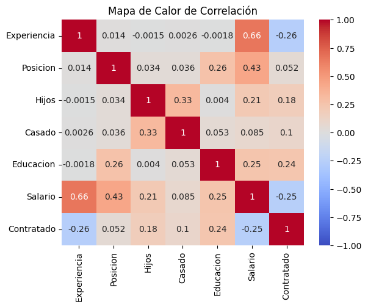
Acá podemos confirmar que el dataframe es el mismo, solo con un feature nuevo llamado Contratado, todas las otras relaciones se mantienen y este nuevo feature tiene un poco con Educacion y Hijos
Leyenda de educacion- 0:
Bachillerato - 1:
Licenciatura - 2:
Posgrado
- 0:
# Suponiendo que tus variables categóricas son 'Posicion', 'Casado' y 'Educacion'
catplot(data=df_1, x='Hijos', hue='Contratado', col='Educacion', kind='count')
plt.show()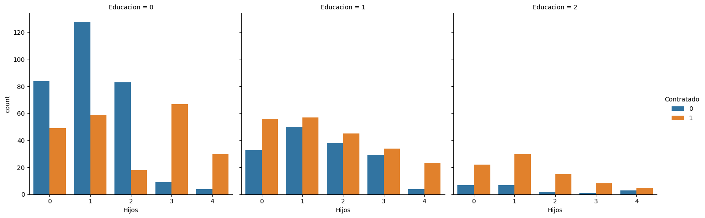
Es interesante lo que podemos ver acá: - Mientras mayor educación es menos el desempleo - Los usarios con un solo hijo son los que mas coincidencias tienen - Los usuarios con licenciaturas son los mas equilibrados con respecto a los features analisados
No profundizare mas con el análisis entre variables ya que es el mismo que el anterior, ya conocemos las tendencias.
2.5 Train test data
X = df_1.drop(columns='Contratado')
y = df_1['Contratado']
X_train, X_test, y_train, y_test = train_test_split(X,
y,
test_size=0.15,
random_state=34
)Acá definimos las variables dependientes e independientes, posteriormente definimos los conjuntos de entrenamiento y de prueba para nuestro modelo de predicción
2.6 Data engineering
columns_standard = ['Experiencia', 'Hijos']
columns_minmax = ['Salario']
# Crear el column transformer con diferentes scalers
column_transformer = ColumnTransformer(
transformers=[
('standard', StandardScaler(), columns_standard),
('minmax', MinMaxScaler(), columns_minmax)
],
remainder='passthrough'
)
# Crear el pipeline
pipeline = Pipeline(steps=[
('preprocessing', column_transformer)
])
# Aplicar el pipeline al conjunto de entrenamiento y prueba
X_train_scaled = pipeline.fit_transform(X_train)
X_test_scaled = pipeline.transform(X_test)Aplicamos igual un pipeline para el pre-procesamiento, a diferencia del modelo anterior, toca escalar Salario como tiene valores totalmente diferentes los otros features, le aplicaremos un escalamiento que se adapte mejor a sus valores.
2.7 Train model
model_lgr = LogisticRegression(penalty='l2', solver='liblinear')
model_lgr.fit(X_train, y_train)LogisticRegression(solver='liblinear')In a Jupyter environment, please rerun this cell to show the HTML representation or trust the notebook.
On GitHub, the HTML representation is unable to render, please try loading this page with nbviewer.org.
LogisticRegression(solver='liblinear')
Para este modelo de clasificación utilizaremos regresión logistica, modificamos un poco los hiperparametros para mejorar el desempeño.
2.8 Prediction and performance
y_predlgr = model_lgr.predict(X_test)
Lgpre = accuracy_score(y_test, y_predlgr)
print(f'Precisión Score: {Lgpre}')Precisión Score: 0.8266666666666667Definimos la variable predictora y tambien la variable con la matriz de confusión, a diferencia del modelo anterior, usaremos accuaracy_score como metrica de desempeño, arrojandonos un 82% de precisión, bastante bien
cm = confusion_matrix(y_test, y_predlgr)
heatmap(cm, annot= True, fmt= '.0f', cmap= 'winter')
plt.title('Matriz de confusión')
plt.xlabel('Valor predecido')
plt.ylabel('Valor real')
plt.show()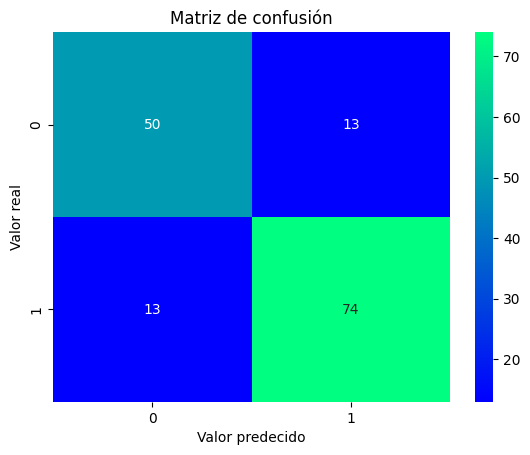
Con una matriz de confusión podemos observar las fallas y acertadas de los valores predichos con respecto a los reales, notamos que son muy pocos los valores incorrectos
2.9 ROC curve
# Obtener probabilidades predichas en el conjunto de prueba
y_probs = model_lgr.predict_proba(X_test)[:, 1]
# Calcular el AUC-ROC para evaluar el rendimiento del modelo
roc_auc = roc_auc_score(y_test, y_probs)
print(f'AUC-ROC: {roc_auc}')
# Dibujar la curva ROC
fpr, tpr, thresholds = roc_curve(y_test, y_probs)
plt.plot(fpr, tpr, label=f'AUC-ROC = {roc_auc}')
plt.xlabel('False Positive Rate')
plt.ylabel('True Positive Rate')
plt.title('Curva ROC')
plt.legend()
plt.show()
# Encontrar el umbral óptimo
optimal_threshold = thresholds[argmax(tpr - fpr)]
print(f'Umbral óptimo: {optimal_threshold}')
# Aplicar el umbral para convertir las probabilidades en etiquetas de clasificación
y_pred = (y_probs >= optimal_threshold).astype(int)
# Evaluar el rendimiento del modelo con el umbral óptimo
accuracy = accuracy_score(y_test, y_pred)
conf_matrix = confusion_matrix(y_test, y_pred)
classification_rep = classification_report(y_test, y_pred)
print(f'Exactitud (Accuracy): {accuracy}')
print('Matriz de Confusión:')
print(conf_matrix)
print('Reporte de Clasificación:')
print(classification_rep)
AUC-ROC: 0.8589673417259625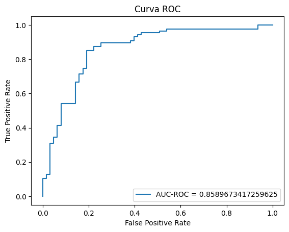
Umbral óptimo: 0.5017194374414228
Exactitud (Accuracy): 0.8333333333333334
Matriz de Confusión:
[[51 12]
[13 74]]
Reporte de Clasificación:
precision recall f1-score support
0 0.80 0.81 0.80 63
1 0.86 0.85 0.86 87
accuracy 0.83 150
macro avg 0.83 0.83 0.83 150
weighted avg 0.83 0.83 0.83 150
Usaremos como metrica la curva ROC perfecta para problemas de clasificación binaria, nos arroja un 85%, un valor cercano a 1 representa un modelo perfecto, mientras que un valor cercano a 0.5 indica un modelo que no es mejor que una predicción aleatoria.
2.10 Save the model
# Guardar el modelo
joblib.dump(model_lgr, 'modelo_regresion_logistica.pkl')['modelo_regresion_logistica.pkl']Ya con nuestro modelo entrenado y probado, podremos guardarlo para luego desplegar
3 Conclusion
Estuvo bastante entretenido el desarrollo de este pequeño proyecto, pudimos cumplir lo que el cliente necesitaba, el desarrollo de un modelo capaz de predecir el salario de un postulante con respecto a ciertos features, por ejemplo, la educación, la cantidad de hijos, si estaba casado o no, etc. Como desafio adicional, se nos anexo otro dataset pero con una columna mas, y en este caso se tenia que diseñar un modelo de clasificación, si un postulante dependiendo de tus features, seria contratado o no.